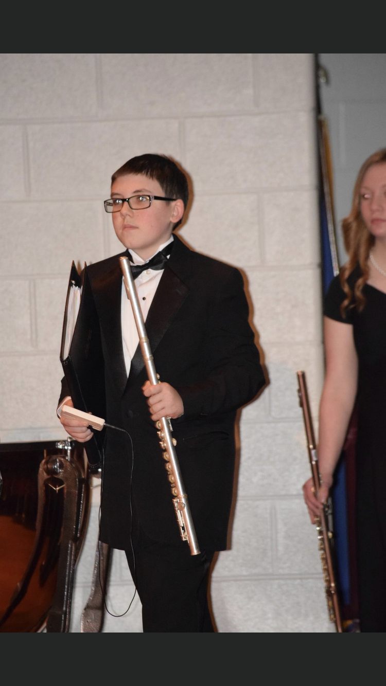

Aleks Carrs Bioagraphy Page

I was born June 3rd 2001 in Binghamton New York my family consists of my mom and dad and my sister. I live in New milford Pennsylvania where I went to school at Blue Ridge School District. When I was in school I was interested in being part of the music program but hated to sing so I joined band which was mandatory in fifth grade but non mandatory all the other years. I played Flute which is a musical instrument that produces a sound when blowing into the edge of the mouthpiece hole. When you blow that results in it vibrating making a nice sound. I played the flute for 8 years in our school band. I would continue doing it but don't have a flute anymore. While I was in school another thing I liked to do was computers. My first coding class was in 9th grade and the last class at my school I took it in 10th grade. After those two classes I knew I was interested in this sort of stuff so that's why I took this class at Thaddeus Stevens College.
